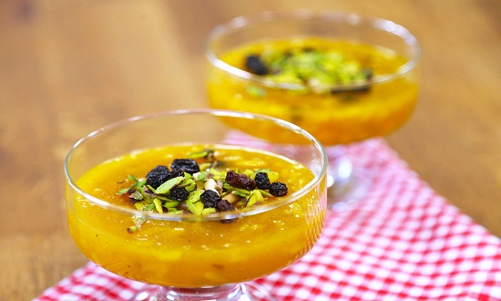

Aşure

According to Islamic belief, when Noah survived the big flood, he made a pudding dish with the ingredients that were available. There are many variants of this Turkish dessert. Basically this is a mixture of sugar, grains like wheat, chickpea and haricot beans with dried fruits like fig, appricot and raisin as well as nuts like hazelnut, and walnut for dressing.
The dessert comes with a religious custom. The first month of the Islamic calendar is Muharrem. It is a good deed to fast the first 10 days of Muharrem, and then on the 10th day, the Day of Ashure, to cook and share ashure with your neighbors and relatives. Therefore ashure has had a binding social value. Today, the tradition of sharing ashure is still very much alive.
Zerde
A traditional Turkish dessert for weddings and birth celebrations. This yellow color pudding has very simple ingredients: water, rice, corn starch as well as saffron and curcuma to create its yellow color.
The garnishing of zerde varies depending on local fruits such as currant, pine nuts, rose water, pistachios and pomegranate.
Sütlaç
All over the world people love and eat rice pudding. It is so widespread that every country has its own preparation style. In Turkey people cook rice pudding with water, milk, rice, sugar and rice flour. In modern versions people added vanilla flavor, too.
Cinnamon or grinded hazelnuts are the two main dressings. After it is browned in a salamander broiler it becomes the Turkish dessert called fırın sütlaç, or oven baked rice pudding.
Tavuk Göğsü
Chicken breast is the direct translation of this dessert, and shockingly that is also the ingredient of this thick pudding like delicacy. After boiling the chicken breast in water and ripping it into small fibers, it is boiled even more with milk, sugar and rice or corn starch. Cinnamon is the main dressing/flavoring element.
Kazan Dibi
When you cook tavuk göğsü pudding on a tray with sprinkled powder sugar at the bottom, then it is called kazandibi – the bottom of the pot. The stove fire caramelizes the sugar so it colors and sweetens the thick pudding. It is scraped and served folded, hence the brownish delicious savor faces its admirers. If you leave the chicken out of the recipe, then it is called muhallebi kazandibi.
Keşkül
It is a simple yet delicious pudding cooked with crushed almonds, grated coconut, milk, sugar, rice flour and corn or potato starch. Coconut and blanched almond flakes or pistachios sprinkled on the top are the finishing touch. Like the rest of the pudding desserts it is served cold or maximum at room temperature.
Cezerye
The name comes from cezer, which means carrot in Arabic. This Turkish dessert consists of caramelized carrots with cinnamon, nuts like walnut, hazelnut or pistachios and is covered with grated coconut. It can be an easy to carry travel souvenir to take back home and share with your loved ones.
Lokum
The original date for the invention of lokum is not clear. However, it is certain that Ali Muhittin Hacı Bekir’s lokums introduced the taste to the world. He opened his confectionery shop in Istanbul in 1776. An English explorer got lokum from his shop and took them to England. Turkish delight’s fame spread since then.
Originally, there were three colors meaning three flavors: red – rosewater, yellow – lemon peel and green – bitter orange.
With today’s rich variety of ingredients and nuts there currently are several flavors such as rose, pistachio, hazelnut, walnut, almond, coconut and almond, cream, cream with cinnamon, mint, mastic, cinnamon, ginger, clove and coffee, and fruit flavors like sour cherry, strawberry, orange, apricot, and lemon.
Cevizli Sucuk / Küme
Sucuk is a spiced sausage similar to pepperoni. This Turkish dessert lends its name from it because it resembles a sausage. Together with walnuts, almonds and hazel nuts are also commonly used. The nuts are lined up on a string, dipped in molasses of mainly grapes. Some varieties of mulberry and pear molasses taste equally delicious. Needless to say it is a calorie boost, yet very rich in minerals and vitamins such as A, D, E and K.
Pişmaniye
Also known as Turkish fairy floss which makes sense given its texture. Pişmaniye is another Turkish dessert with a very old traditional taste. The place of birth is the Kandıra district in the city of Kocaeli. It dates back to the 15th century.
Sugar is melted, frozen, shaped like a big ring and placed on the mixture of roasted flour with butter. The rest of the process is constantly pulling the ring and shaping it back to a ring again until it becomes flossy.
It is similar to cotton candy but different in texture. It is garnished with different flavors like ground pistachios or cacao. It looks a bit messy — which it actually is while eating because it falls off in very small pieces — and it is also sticky. Yet, the trouble is certainly worth trying. Thanks to the modernized packaging you sure can take a box back home as a nice Turkish souvenir.
Höşmerim

This over 500 year old dessert is from the west of Turkey, the city of Balıkesir. Roasted semolina is sweetened with a syrup of milk, water and sugar. The most important ingredient of höşmerim is dil peyniri, an unsalted mozzarella like cheese. It melts and mixes within the rest. The dressing elements are cream, almond, walnut, shredded coconuts or caster sugar.
Revani
This cake consisting of a mixture of semolina, wheat flour, eggs, sugar, oil, yogurt and lemon zest is baked and sweetened with a syrup of water, sugar and lemon juice.
İrmik Helvası
The term ‘helva‘ means sweet in Arabic. Turks became familiar with helva after their introduction to Islamic and Arabic culture. The relatives of a deceased person cook and offer semolina helva or flour helva to visitors and neighbors on the seventh and fortieth day following the death of a Muslim, and also on the first anniversary.
Semolina is roasted in butter together with pine nuts on very low fire for a long time and left to rest with boiling hot milk, water, and sugar. Cinnamon is the most common dressing.
Sütlü Nuriye
Basically the dessert is the same as baklava but with a slightly different syrup. The amount of water is less and milk is added. Therefore it has a whitish look and it also tastes a little less heavy. The origin of the name is vague. Nuriye is a female name. Some say the dessert takes its name after the inventor. Some say the cow that supplied milk to make the dessert was called Nuriye. Others say that after the Coup d’état in 1980, when the economy was disastrous and the prices of baklava were frozen by the municipality, people got creative not to lose money. Using milk with less sugar instead of sorbet, and hazelnuts instead of the more expensive pistachios was the invention of a baklava artisan. And he called it Sütlü Nuriye to point out the difference.
Burma
Another variant of baklava, this time by its shape. A few layers of very thin phyllo dough are placed on top of each other, dressed with nuts between the layers, wrapped around a rolling pin, and creased around the pin by pushing. It is then dressed with butter, oven baked and sweetened with the syrup. Since it has a hole in the middle you might say a portion is a little more guilt free of calories.
Bülbül yuvası
The name comes from the circular shape of the phyllo dough containing nuts, mostly pistachios. The preparation is almost the same with burma, but the difference is that the rolls are shaped into rings and the pistachios are placed in the hallows of the rings after the dough is cooked.
Fıstıklı Sarma
This Turkish dessert is also similar to baklava, with the exception of the excessive amount of pistachio. Fıstık means pistachio and this desert is only made with pistachios. Whereas you can get baklava with hazelnuts, walnuts or pistachio. Its hometown is the city of Gaziantep in the south-east of Turkey. I haven’t been to Gaziantep, however I have been to another city in the south-east, Kahramanmaraş. This dessert with the Maraş ice-cream on the top was a killer taste I fail to forget, ever!
Şöbiyet
This is the only phyllo dough dessert with an original filling compared to the rest. A mixture of milk and semolina is boiled to a thick pudding called kaymak – cream filling. Around 10 layers of phyllo doughs are put on top of each other with a butter dressing on each, and are then cut in 7 by 7 cm squares. Kaymak and walnuts are placed on the center of the squares, folded into two as triangles, baked, sweetened with the syrup and dressed with grounded pistachios
Güllaç
n the 15th century, the common people of the Ottoman Empire made stocks of yufka – phyllo dough, made of corn starch and water. After contact with air, these sheets dried and it was ideal to save them for months. To eat when desired, they soaked the sheets in milk and sugar. In the course of time rose water became another ingredient as well as the hazelnut, walnut or almond in between.This light and refreshing Turkish dessert became a huge favorite to eat after breaking the fast during the Ramadan. Today, the yearly consumption of güllaç is around 250 tons. Some 85% of this is consumed during Ramadan. Recently rose water became less popular and has been replaced by a pomegranate dressing on the top. It adds a nice flavor and a charming look on the plain white dessert.
Kabak Tatlısı
Squash (kabak) dessert is pretty simple yet luscious, especially when served with thick cream or even fresh yogurt to make it lighter. The dressing can be walnut or hazelnut. The squash boils lightly with sugar and very little water. Some prefer to bake for more crispy edges and a sticky texture.
Ayva tatlısı
One of my favorites, quince dessert is a modest name for such a divine taste. Cooked in water, then oven baked with sugar, with cinnamon sticks and nuts in the middle. Can also be served with ice-cream or thick cream in the middle. It is certainly lighter than most of the traditional Turkish desserts.